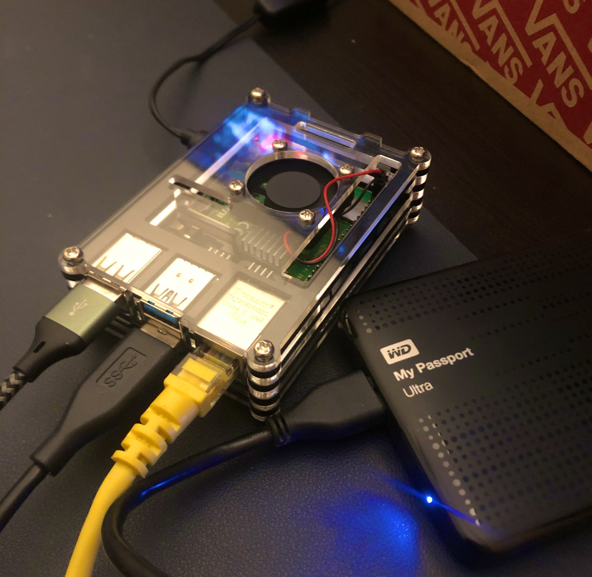

![]()
La comunidad de Psicotuiter
Psicotuiter (aka. Psicotwitter) es una comunidad de perfiles de Twitter que hablan de Psicología, entre otras cosas. No se trata de un grupo cerrado, sino de una etiqueta útil para mencionar a esta comunidad. Aunque sus límites son algo difusos (y sería absolutamente innecesario precisarlos), se podría considerar que esta comunidad existe de manera relativamente formal desde 2015, aproximadamente.
Por qué un bot
Uno de los problemas que muchas personas de esta comunidad verbalizaba durante los últimos meses (aunque probablemente se trate de un fenómeno cíclico) es lo fácilmente que un debate acalorado o incluso irrespetuoso entre dos personas o grupos de personas podía afecta al clima general de la comunidad. Independientemente de la legitimidad de la discusión en curso, no es ideal que la experiencia en Twitter de una persona promedio en el día a día sea dependiente de un número de interacciones tan reducidas. Alicia Franco hizo es su momento una encuesta capturando el clima general de Psicotuiter en su momento (los resultados están disponibles también en un paquete de R que desarrollamos, llamado {psicotuiteR}, disponible en GitHub):
¡Hola, hola!🌿
— Ali ☻︎ ((AliciaFrancoXVE?)) January 21, 2021
¿Os acordáis del cuestionario que hicimos sobre “Clima en (Psico)Twitter”?
👇¡Pues ya tenemos los resultados!👇 pic.twitter.com/RbDM78LA0k
Lo mucho que este clima se extiende a través de toda la comunidad puede deberse en parte a la propia estructura de redes de amistad entre los diferentes perfiles. Mi opinión y la de más personas (aun no hemos mirado los datos, pero en algún momento nos gustaría hacerlo), es que la estructura de esta comunidad está muy centralizada: muchas personas con relativamente pocos seguidores (0-400) siguen a unas pocas personas con relativamente muchos seguidores (5.000-20.000). Esto convertiría a las segundas en poseedoras de una parte substancial del espacio de la comunidad. Recientemente hice un pequeño hilo ampliando esta reflexión:
Yo tengo una experiencia parecida a la de (IreneFPinto?). Mi TL es el mejor y recibo muchísimo apoyo de la gente buena de aquí. Pero esa es mi experiencia.
— Gon García-Castro ((gongcastro?)) December 18, 2021
Ahora bien, tengo una pequeña reflexión sobre la estructura de #psicotuiter (importantes las aclaraciones al final): 🧵 https://t.co/G77h8YRQdZ
Una de las consecuencias inmediatas de esto es que el contenido del timeline (TL) de la mayoría de Psicotuiter dependería de las interacciones entre un pequeño grupo de personas con muchos seguidores. Teniendo en cuenta que las interacciones negativas tienden a extenderse más rápido y llevarse más atención que las positivas o neutras (ej. Bellovary et al., 2021), el impacto de la estructura centralizada de la comunidad sobre el clima del TL de la persona promedio en Psicotuiter es importante.
Otra consecuencia posiblemente menos comentada, y sin embargo más importante en mi opinión, es que para la persona promedio también es más difícil acceder a al resto de la comunidad (es decir, a conocer e interactuar con otras cuentas) si no es a través de la mediación de cuentas más grandes que amplifiquen sus mensajes y los hagan llegar a otras cuentas pequeñas que también les siguen. Creo que esto puede ser frustrante si utilizas Twitter no sólo para leer contenido sino también para generarlo o extender tus redes de apoyo (muy importantes en muchos casos).
A principios de Octubre de 2021 se me ocurrió posible forma de reducir el peso de las cuentas grandes sobre cómo se distribuyen las interacciones en Psicotuiter: un bot que amplifica todos los mensajes potencialmente relevantes para la comunidad, sin atender al número de seguidores de la cuenta que lo ha escrito, ni a qué otras cuentas siguien a esa cuenta. Esto, en combinación con que una parte relevante de Psicotuiter siga al bot, podría permitir que cuentas pequeñas accedan a una comunidad más grande sin mediación de otras cuentas.
Creando el bot
Escribiendo el código
Un bot de Twitter no es más que un código que se ejecuta automáticamente de forma periódica (ej., cada 15 minutos) y realiza una acción en Twitter a través de una cuenta (hacer un RT o responder a un tweet). Para poder realizar esta acción a través del código, es necesario tener acceso a la API de Twitter. API es un acrónimo para Application Programming Interface y como dice su nombre, es una plataforma desde la que podemos interactuar con una aplicación (en este caso Twitter) a través de programación con una serie de comandos que el equipo de Twitter ha diseñado la API ha definido.
Nunca había hecho un bot de Twitter, pero sabía de la existencia de bastantes tutoriales para hacerlo. La mayoría de los bots de Twitter (y por tanto de los tutoriales) están escritos en Python y JavaScript, pero yo me encuentro algo más cómodo con R. Además gran parte de Psicotuiter (especialmente quienes están relacionades con la metodología) también está más familiarizado con R. Mi intención era hacer el bot lo más trasparente y accesible para la comunidad, así que me decanté por R. En un pricipio seguí el tutorial de Matt Dray, en el que utiliza el paquete de R {rtweet} para interactuar con la API de Twitter. Hay más tutoriales que usan rtweet para crear un bot con R. Pero a diferencia de otros, este tutorial explicaba cómo usar GitHub actions para ejecutar el código de forma periódica. Ahora explico esto último. Mientras tanto, vamos al código de R.
Primero creé un repositorio de GitHub donde alojar el código (GitHub es como un Google Drive especializado en código donde además podemos hacer control de versiones de los archivos que subimos). Puedes echar un vistazo al código de R en la carpeta R/. El código principalmente recoge los últimos tweets que se han escrito en las últimos 6 horas mencionando #psicotuiter o #psicotwitter y los retuitea. No me meteré en detalle a explicar cómo funciona el código, pero aquí va un pequeño resumen del programa. Si tienes curiosidad te recomiendo explorar el repositorio de GitHub, que contiene todo lo necesario para hacer funcionar el bot:
Primero cargamos el paquete de R {dplyr}, que utilizamos en bastantes ocasiones en el programa, ajustamos un pequeño detalle relacionado con el comportamiento de la API de Twitter, e instalamos los paquetes necesarios (en caso de que hayan cambiado) usando el pqeute de R {renv} (si no lo conoces y te interesa la reproducibilidad computacional tienes que echarle un vistazo).
# bot R code
library(dplyr)
options(httr_oob_default = TRUE)
# restore packages
renv::restore()A continuación extraemos las credenciales que necesitamos para acceder a la API de Twitter (las paso a como variables de entorno para evitar hacerlas públicas, ya que eso dería acceso a cualquiera a la cuenta de Twitter del bot).
# authenticate Twitter API
my_token <- rtweet::create_token(
app = "psicotuiterbot", # the name of the Twitter app
consumer_key = Sys.getenv("TWITTER_CONSUMER_API_KEY"),
consumer_secret = Sys.getenv("TWITTER_CONSUMER_API_KEY_SECRET"),
access_token = Sys.getenv("TWITTER_ACCESS_TOKEN"),
access_secret = Sys.getenv("TWITTER_ACCESS_TOKEN_SECRET"),
set_renv = FALSE
)Luego extraemos los tweets usando rtweet, filtramos los que sean relevantes y no contengan posible contenido ofensivo (y algún otro filtro más).
library(dplyr)
# define hashtags
hashtags_vct <- c("#psicotuiter", "#psicotwitter", "#Psicotuiter", "#Psicotwitter", "#PsicoTuiter", "#PsicoTwitter")
hashtags <- paste(hashtags_vct, collapse = " OR ")
hate_words <- unlist(strsplit(Sys.getenv("HATE_WORDS"), " ")) # words banned from psicotuiterbot (separated by a space)
blocked_accounts <- unlist(strsplit(Sys.getenv("BLOCKED_ACCOUNTS"), " ")) # accounts banned from psicotuiterbot (separated by a space)
time_interval <- lubridate::now(tzone = "UCT")-lubridate::minutes(120)
# get mentions to #psicotuiter and others
all_tweets <- rtweet::search_tweets(
hashtags,
type = "recent",
token = my_token,
include_rts = FALSE,
tzone = "CET"
)
status_ids <- all_tweets %>%
filter(
!(screen_name %in% gsub("@", "", blocked_accounts)),
created_at >= time_interval, # 15 min
!grepl(paste(hate_words, collapse = "|"), text), # filter out hate words
stringr::str_count(text, "#") < 4, # no more than 3 hashtags
lang %in% c("es", "und") # in Spanish or undefined language
) %>%
pull(status_id)
# get request ID
request_tweets <- rtweet::get_mentions(
token = my_token,
tzone = "CET"
) Finalmente, hacemos RT uno a uno usando rtweet (si ya habíamos hecho RT a uno de ellos simplemente se ignora).
if (nrow(request_tweets) > 0) {
request_ids <- request_tweets %>%
filter(
created_at >= time_interval, # 15 min
grepl("@psicotuiterbot", text),
grepl("rt|RT|Rt", text),
!grepl(paste(hate_words, collapse = "|"), text) # filter out hate words
) %>%
pull(status_in_reply_to_status_id)
# get requested IDS
if (length(request_ids) > 0) {
requested_ids <- rtweet::lookup_statuses(request_ids, token = my_token) %>%
filter(
!grepl(paste(hate_words, collapse = "|"), text) # filter out hate words
) %>%
pull(status_id)
} else {
requested_ids <- NULL
}
} else {
requested_ids <- NULL
}
# RT all IDs
if (length(status_ids) > 0){
for (i in 1:length(status_ids)){
rtweet::post_tweet(
retweet_id = unique(status_ids)[i], # vector with IDs
token = my_token
)
}
print(paste0(length(status_ids), " RT(s): ", paste(status_ids, collapse = ", ")))
} else {
print("No tweets to RT")
}Recientemente incluí un pequeño bloque de código para permitir que la gente solicitase un RT para tuits que no mencionaban #psicotuiter, pero podrían ser de interés para la comunidad. Para hacerlo solo hay que responder al tuit en cuestión mencionando a @psicotuiterbot junto con la palabra RT (ej., “RT @psicotuiterbot por favor”).
# tweet requests
if (length(requested_ids) > 0){
for (i in 1:length(requested_ids)){
rtweet::post_tweet(
retweet_id = unique(requested_ids)[i], # vector with IDs
token = my_token
)
}
print(paste0(length(requested_ids), " request(s) posted: ", paste(requested_ids, collapse = ", ")))
} else {
print("No requests")
}Ejecutando el código
Lo que hace “bot” a un bot es que no requiere intervención manual para que realice la acción que deseamos. Hay muchas opciones para conseguir esto, pero casi todas tienen un inconveniente: necesitamos que una máquina (ordenador/servidor, móvil, etc.) esté encendido en el momento en el que queremos ejecutar nuestro código. En nuestro caso necesitamos que se ejecute cada 15 minutos, lo que implica que deberíamos tener un dispositivo conectado a la corrriente y funcionando todo el día. Tener mi ordenador personal haciendo esto no es una opción viable. Me encontré con dos alternativas.
Primer intento (sale mal): GitHub actions
Como mencioné antes, en el tutorial de Matt Dray se ilustra cómo usar GitHub Actions para ejecutar nuestro código una vez está alojado en un repositorio de GitHub. GitHub Actions es un servicio que ofrece GitHub que permite ejecutar ciertos comandos en determinadas condiciones o cada cierto tiempo usando un servidor que ponen a nuestra disposición (con ciertos límites). Este grupo de comandos se denominan workflows o flujos de trabajo, y si los incluimos en una carpeta de nuestro repositorio llamada .github/workflows/ siguiendo cierto formato en un archivo YAML (.yml), GitHub se encargará de ejecutarlo sin nuestra intervención. Hay buenos tutoriales sobre cómo y cuándo escribir workflows para GutHub Actions. El workflow principal era inicialmente este:
name: bot
on:
push:
branches:
- main # run every time there is a push to main branch
- test
jobs:
psicotuiterbot-post:
runs-on: macOS-latest
env: # twitter API keys (used to authenticate) defined in the gh actions environment
TWITTER_CONSUMER_API_KEY: ${{ secrets.TWITTER_CONSUMER_API_KEY }}
TWITTER_CONSUMER_API_KEY_SECRET: ${{ secrets.TWITTER_CONSUMER_API_KEY_SECRET }}
TWITTER_ACCESS_TOKEN: ${{ secrets.TWITTER_ACCESS_TOKEN }}
TWITTER_ACCESS_TOKEN_SECRET: ${{ secrets.TWITTER_ACCESS_TOKEN_SECRET }}
steps:
- uses: actions/checkout@v2
- uses: r-lib/actions/setup-r@v1
- uses: r-lib/actions/setup-renv@v1
with:
cache-version: 1
- name: Restore packages using renv
shell: Rscript {0}
run: |
if (!requireNamespace("renv", quietly = TRUE)) install.packages("renv")
renv::restore()
- name: Create and post tweet
run: Rscript R/bot.RLa gran ventaja de usar este sistema es que no necesitamos usar nuestro ordenador personal, ya que usamos el que que GitHub nos asigna (un servidor no deja de ser un ordenador). Pero tiene varios inconvenientes. El primero es que el proceso de establecer un workflow en GitHub Actions suele requerir varios intentos (en mi caso muchos). Esto suele deberse a problemas de reproducibilidad computacional: el código funciona correctamente en mi ordenador porque en él tengo instalado todo el sofware del que depende. Cuando uso el servidor de GitHub, el sistema operativo suele necesitar que instalemos estas dependencias antes de ejecutar el código. GitHub Actions permite cierta flexibilidad a la hora de seleccionar el software que viene instalado en el sistema operativo que vamos a usar (ej., R, compiladores de C++, dependencias de Linux, etc.). El problema es que muchas veces ni siquiera somos conscientes de cuántas dependencias requiere nuestro código. Con paciencia y muchas búsquedas de Google es posible solventar este problema.
Un segundo inconveniente que encontré a la hora de implementar el bot en GitHub Actions tiene que ver con los tiempos: instalar todas las dependencias del código en el servidor cada 15 minutos (la configuración se pierde casi totalmente tras cada ejecución) es poco eficiente. Instalar las dependencias puede tardar más de 10 minutos (en el caso de este bot). Esto puede además hacer fallar en ocasiones el flujo de trabajo. GitHub Actions tampoco es lo más consistente del mundo, aunque no deja de ser gratis.
Segundo intento (sale bien): Raspberry Pi
Tras varios problemas en la ejecución del bot a través de GitHub Actions, decidí cambiar de método. Por razones ajenas al bot, hacía unos meses que tenía muerta de aburrimiento una Raspberry Pi 4 que compré con un amigo para jugar con ella. Este dispositivo es un mini-ordenador relativamente barato (~40€) que salió al mercado como herramienta educativa para enseñar a programar (ej., róbotica para niñes) pero que poco a poco ha ido tomando espacio en lugares de producción. Tiene mil posibilidades por su simplicidad y, en nuestro caso, por su bajo consumo: tener una Raspberry Pi funcionando todo el día apenas tiene impacto sobre el consumo de luz.

Primero instalé el código en la Raspberry con sus dependencias: básicamente, cloné el repositorio de GitHub en una carpeta dentro de home/Documents/. Para ejecutar el código cada 15 minutos utilicé una función muy útil que incluye Linux (sistema operativo con el que funciona la Raspberry) llamado CRON. Simplemente consiste en un archivo en el que incluimos una serie de comandos que queremos que se ejecuten de forma periódica, junto con una código que indica la periodicidad de la ejcución de este comando. Aquí tienes unos ejemplos. Incluí cuatro comandos (cada uno en su propio archivo con extensión .sh, que denota comandos de Linux):
# descarga el código de GitHub, por si ha habido cambios
git pull origin main
# ejecuta el código principal del bot
TZ="Spain/Madrid" Rscript -e 'source("R/bot.R")'
# guarda los tweets detectados en un archivo y crea un gráfico
Rscript -e 'source("R/counts.R")'
rm Rplots.pdf
# sube los nuevos datos a GitHub
git add .
git commit -m "Update repository"
git pushEstos comandos se ejecutan en este orden cada 15 minutos.
Bloqueando usuarios de forma remota
Debido a que algunas cuentas intentaron hacer un mal uso del bot, y también porque otras mencionaron no querer ser retuiteadas por el bot a pesar de usar el hashtag, recientemente he añadido un pequeño script que permite bloquear usuarios que con tan sólo enviar al bot un mensaje directo de Twitter. El script R/block.R accede a los 10 últimos mensajes recibidos por parte de usuaries “VIP” (de momento, sólo yo) y añade el nombre de usuario que contiene el mensaje a la variable global definida en el archivo .Renviron. De esta forma, aunque no tenga acceso a la Raspberry Pi de forma local (y por tanto, tampoco al bot), sí puedo hacer el que el propio bot modifique los archivos locales a través de mensajes directos de Twitter sin tener que desvelar el contenido de la lista de usuarios bloqueados. Podría ser más fácil simplemente añadir la lista bloqueados al script como una variable (un vector, por ejemplo). El código se actualizaría cada 15 minutos a través del script sh/git-pull.sh y el vector de usuarios bloqueados lo haría también. Este método tendría la desventaja de que esa lista se haría pública en el repositorio de GitHub. Al pasar esa lista como una variable de entorno a través de .Renviron puedo cargar ese vector sin desvelar us contenidos, al igual que hago para pasar las credenciales de la API de Twitter a la sesión de R. Este es el código:
vip_users <- unlist(strsplit(Sys.getenv("VIP_USERS"), " "))
blocked_accounts <- Sys.getenv("BLOCKED_ACCOUNTS")
blocked_accounts_vct <- unlist(strsplit(blocked_accounts, split = " "))
# get DMs
msg <- rtweet::direct_messages(n = 10, token = my_token)$events
# if new DMs have been received
if (nrow(msg) > 0){
# for each received DM
for (i in 1:nrow(msg)){
msg_text <- msg$message_create$message_data$text[i]
is_block <- grepl("block|block|bloquea", tolower(msg_text))
sender_name <- rtweet::lookup_users(msg$message_create$sender_id[i], token = my_token)$screen_name
# if message is sent by VIP user and contains keyword "block"
if (is_block & (paste0("@", sender_name) %in% vip_users)){
msg_text_vct <- unlist(strsplit(msg_text, " "))
target_users <- msg_text_vct[grepl("@", msg_text_vct)]
# if at least one targeted users has not been blocked yet
if (!all(target_users %in% blocked_accounts_vct)){
target_users_str <- paste0(target_users, collapse = " ")
blocked_accounts_new <- paste0(blocked_accounts, " ", target_users_str)
renviron_text <- paste0('BLOCKED_ACCOUNTS = "', blocked_accounts_new, '"')
write(renviron_text, ".Renviron", append = TRUE)
message(paste0("User(s) ", paste0(target_users_str, collapse = " "), " is now blocked"))
} else {
repeated_target <- target_users[which(target_users %in% blocked_accounts_vct)]
message(paste0("User(s) ", paste0(repeated_target, collapse = " "), " has already been blocked"))
}
} else {
message(paste0("Message from a non-VIP: ", paste0("@", sender_name)))
}
}
}Conclusiones
De momento, el bot está funcionando bastante bien y se le está dando bastante uso, especialmente por parte de cuentas pequeñas. Aún tengo pendiente hacer un análisis más profundo de qué tipo de actividad tiene lugar en el bot, pero mi impresión es que la mayoría de usos consisten en petitiones de referencias de profesionales de psicología en poblaciones concretas o de referencias bilbiográficas.
Reuse
Citation
@online{garcia-castro2021,
author = {Gonzalo Garcia-Castro},
title = {\textbackslash@Psicotuiterbot: {Un} Bot de {Twitter} Para
{Psicotuiter}},
date = {2021-12-29},
langid = {en}
}